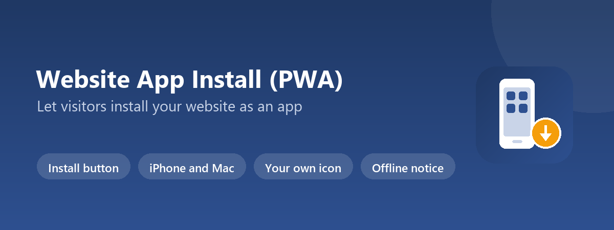

Lets visitors install your website as an app, with an install invitation on the homepage.
Switch it on per website in the Website settings and choose the app's name, colours and icon. The homepage then invites visitors to install the site: one click on Chrome, Edge and Android, and clear steps on iPhone, iPad and Mac Safari. From then on the site opens from their home screen or dock like any other app.
📥 Install buttonOn Chrome, Edge and Android an Install button opens the browser's own install window, and it shows only when the site can be installed. |
🍎 iPhone, iPad and MacSafari visitors get simple Add to Home Screen or Add to Dock steps. |
🎨 Your own brandingEach website has its own app name, short name, colours and icon; without an icon, the favicon or the Odoo logo is used. |
👋 Respects visitorsNot now hides the invitation for the rest of the visit, and Don't show again hides it on that device. |
📡 Offline noticePages load from the network as usual; only a page that cannot be reached shows a short notice that the visitor is offline. |
♿️ Accessible dialogThe invitation is a proper dialog with keyboard support, and all its texts can be translated. |
Odoo 18.0 • Community & Enterprise • depends on Website • Licence LGPL-3
Odoo implementation and development. thecodelegion.com